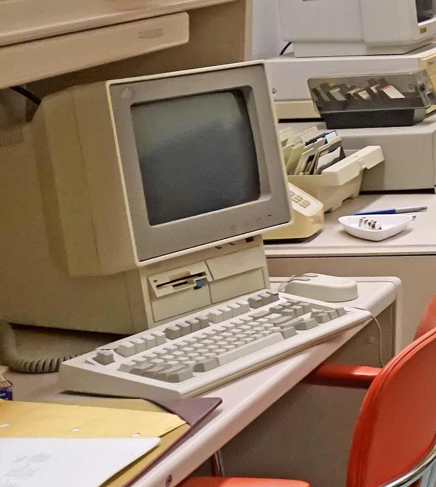

Here I want to talk about older computing, specifically the IBM PS/2 and the BBC micro.
IBM PS/2
The IBM PS/2 was the succesor to the IBM PC, originally created to combat the PC-Compatible(clone) market created by the Compaq portable. IBM wanted to gain back the control of the PC market, by making multiple standards propreitary, and creating a new operating system - OS/2. The PS/2 ended up failing do to the intial release of OS/2 lacking a GUI and the large price tag, as well as subpar compatability with the clone computers The PC-Compatible industry encded up creating their own open standards which pushed IBM out of the leading position in the market.
BBC Micro
The BBC Micro was a computer designed by Camebridge company Acorn Computers in 1981, with government support from the BBC. The BBC wanted to introduce schoolchildren to computers, and wanted a cheap microcomputer that could be used in british schools. The computer became wildly popular in the UK. The company behind the BBC Micro - Acorn, ended up creating the ARM processor which is nowadays wildly used in mobile devices.